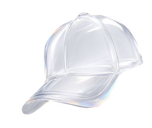

Только
начинаешь
 школьникам
школьникамУзнай, какие сферы существуют, где тебе может быть интересно. Тест покажет, к каким направлениям у тебя есть склонность и что стоит изучить ближе.

школьникамУзнай, какие сферы существуют, где тебе может быть интересно. Тест покажет, к каким направлениям у тебя есть склонность и что стоит изучить ближе.
абитуриентамОпредели, какие форматы работы и роли тебе подходят. Тест покажет, где ты чувствуешь себя увереннее: в анализе, коммуникации, организации или создании идей.
 тем, кто меняет профессию
тем, кто меняет профессиюПойми, в каком формате ты раскрываешься лучше всего: в команде или самостоятельно, в стабильной среде или в динамике, официально или на фрилансе.